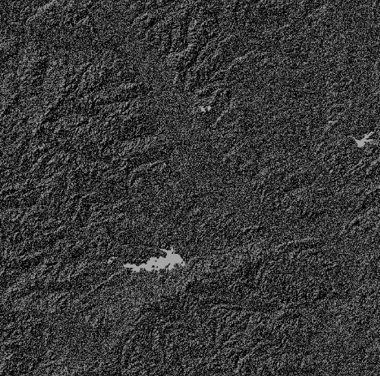
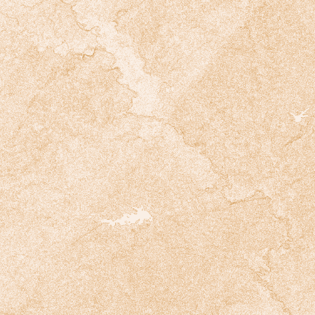
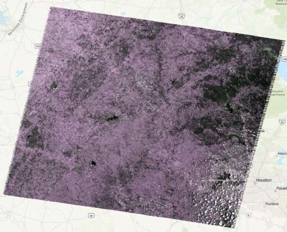
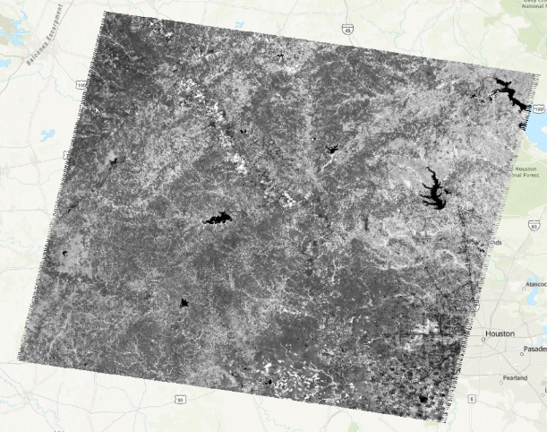
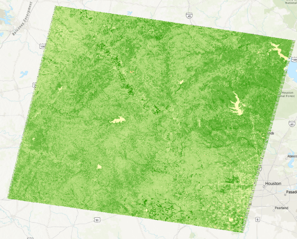

Problem
Derive terrain and vegetation products from elevation and satellite imagery using a single, reproducible script: a hillshade and slope layer from a DEM, an RGB composite from Landsat bands, and an NDVI raster.
My role
Sole author; wrote and ran the full arcpy script.
Data & method
Data:
- DEM:
n30_w097_1arc_v3.tif(1-arc-second DEM) - Landsat 5 scene
LT05_L2SP_026039_20110803— surface-reflectance bands B1 (blue), B2 (green), B3 (red), B4 (NIR)
Method (arcpy):
- Set
arcpy.env.overwriteOutput = Trueand built output paths relative to the script directory for reproducibility. - Generated a hillshade with
arcpy.ddd.HillShade(azimuth 315, altitude 45, no shadows, z-factor 1). - Generated a slope layer in degrees with
arcpy.ddd.Slope. - Built an RGB composite with
arcpy.management.CompositeBands. - Computed NDVI as
((NIR − Red) / (NIR + Red)) × 100 + 100and saved it as a raster.
Figures
Outputs produced by the script: hillshade, slope, RGB composite, and NDVI (before and after colormap).




